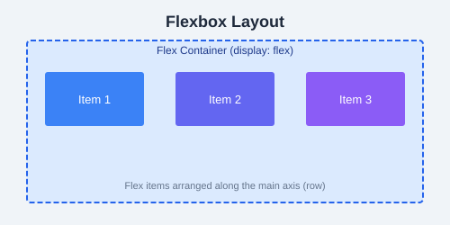

The display property controls how an element behaves in the layout.
p { display: block; }span { display: inline; }button { display: inline-block; }.hidden { display: none; }visibility: hidden hides the element but keeps its space. display: none removes the element entirely from the layout.
div {
max-width: 800px;
margin: 0 auto;
}Elements appear in normal document flow. The top, right, bottom, and left properties have no effect.
Offset from its normal position without affecting surrounding elements.
div {
position: relative;
top: 10px;
left: 20px;
}Positioned relative to the nearest positioned ancestor. Removed from normal flow.
div {
position: absolute;
top: 0;
right: 0;
}Positioned relative to the viewport. Stays in place during scrolling.
nav {
position: fixed;
top: 0;
width: 100%;
}Toggles between relative and fixed depending on scroll position.
header {
position: sticky;
top: 0;
}Controls the stacking order of positioned elements. Higher values appear on top.
.overlay {
position: absolute;
z-index: 10;
}div {
overflow: hidden; /* clip content */
overflow: scroll; /* always show scrollbars */
overflow: auto; /* show scrollbars only when needed */
}img {
float: left;
margin-right: 10px;
}
footer {
clear: both;
}p { text-align: center; }
div {
width: 50%;
margin: 0 auto; /* center block elements */
}
Create a fixed header that stays at the top of the page, a sidebar with position: sticky, and a main content area that scrolls beneath them.